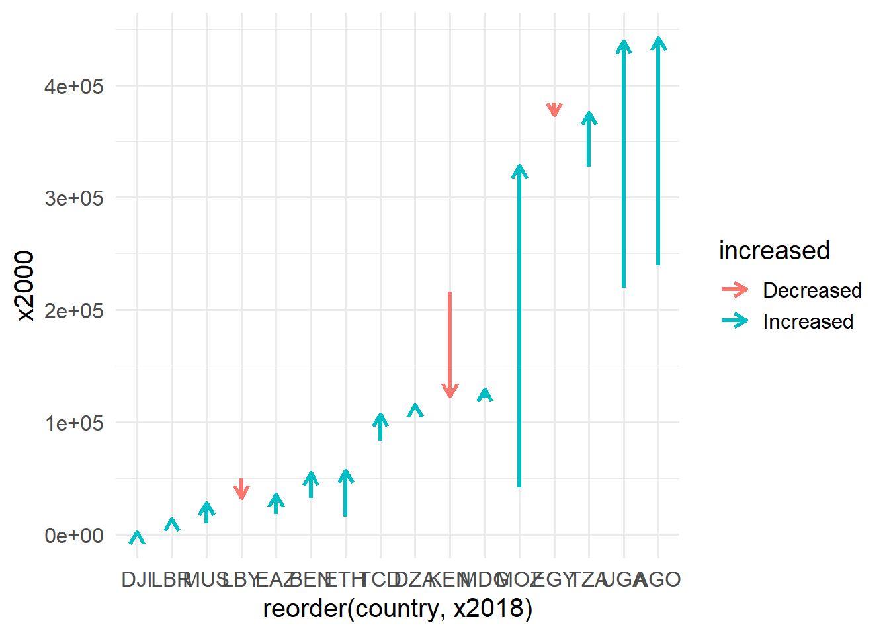
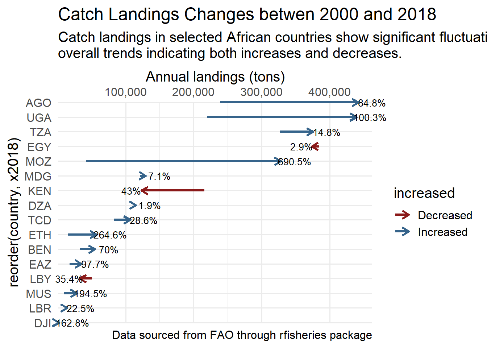
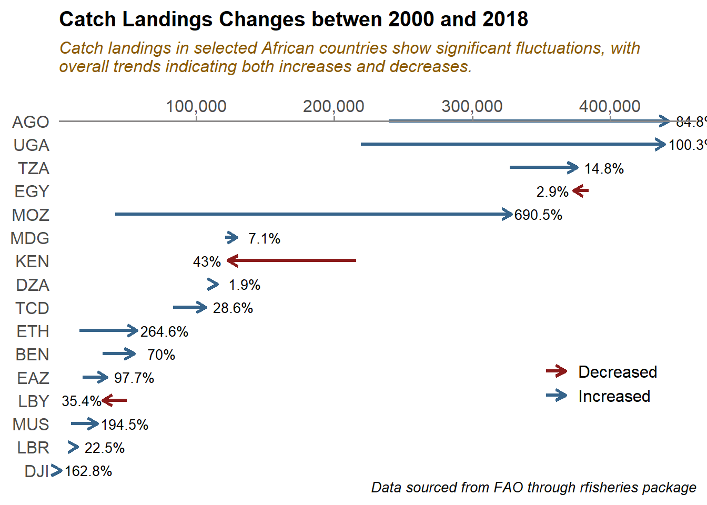
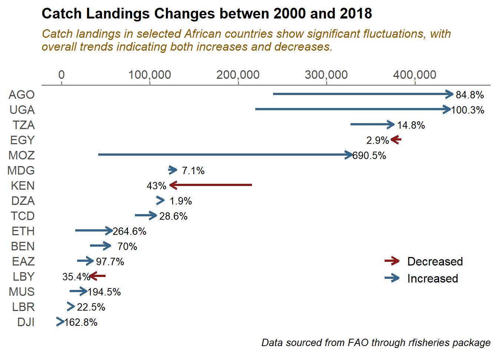

![]()
Introduction
This post visualizes the changes in the proportion of catch landings in national fisheries from 2000 to 2018, using faceted arrow plots created with the ggplot2 library in R. The post covers various techniques for customizing the plot, such as drawing arrows, handling aesthetics inheritance, creating unique annotations in selected faceted panels, and controlling annotation alignment and plot margins. First, let’s load the necessary libraries and the data:
Then download the catch data for each country
fisheries = bind_rows(
rfisheries::of_landings(country = "TZA"),
rfisheries::of_landings(country = "KEN"),
rfisheries::of_landings(country = "UGA"),
rfisheries::of_landings(country = "EAZ"),
rfisheries::of_landings(country = "MOZ"),
rfisheries::of_landings(country = "MDG"),
rfisheries::of_landings(country = "MUS"),
rfisheries::of_landings(country = "NGA"),
rfisheries::of_landings(country = "LBR"),
rfisheries::of_landings(country = "LBY"),
rfisheries::of_landings(country = "ETH"),
rfisheries::of_landings(country = "EGY"),
rfisheries::of_landings(country = "DJI"),
rfisheries::of_landings(country = "TCD"),
rfisheries::of_landings(country = "BEN"),
rfisheries::of_landings(country = "AGO"),
rfisheries::of_landings(country = "DZA")
) year catch country
1 1950 32600.0 TZA
2 1951 32600.0 TZA
3 1952 35600.0 TZA
4 1953 60000.0 TZA
5 1954 59900.0 TZA
1169 2014 97828.0 DZA
1170 2015 95946.0 DZA
1171 2016 100180.0 DZA
1172 2017 104100.1 DZA
1173 2018 115255.0 DZAThe dataset d.long has been prepared to contain data for the years 2000 and 2018, excluding information related to Nigeria. The year column has been converted to a factor, which means it is now treated as a categorical variable rather than a numerical one. This dataset is now in a suitable format for conducting additional analysis or visualization tasks. For example, it can be used to create faceted arrow plots, which are a type of data visualization that allows for comparison and analysis of multiple variables across different categories or factors. Overall, the d.long dataset is now well-prepared for further exploration and interpretation.
Then, transform the d.long dataset into a wide format, clean the column names, add new columns to indicate changes and calculations, round numeric values, and create a formatted percentage change label. The result is stored in the d.wide dataset.
d.wide = d.long |>
pivot_wider(names_from = year, values_from = catch) |>
janitor::clean_names() |>
mutate(
increased = if_else(x2018 > x2000 , "Increased", "Decreased"),
pct.change = (x2018-x2000)/x2000*100,
midpoint = (x2018+x2000)/2
) |>
mutate(across(is.numeric, round, 1)) |>
mutate(pct_label = paste0(pct.change |> abs(), "%"))Visualize
- Create arrows to indicate the changes in the catch landings from 2000 (start of arrows) to 2018 (end of arrows).
f1 = d.wide |>
ggplot()+
geom_segment(
aes(x = reorder(country, x2018), xend = reorder(country, x2018), y = x2000, yend = x2018, color = increased),
arrow = arrow(length = unit(8, "pt")), linewidth = 1.2)
f1
- Flip the axes The code f2 = f1 + coord_flip(expand = 0, clip = “off”) modifies the plot f1 by flipping the coordinates, which essentially swaps the x-axis and y-axis. This means that any horizontal elements in the plot become vertical and vice versa. The parameters expand = 0 and clip = “off” are used to ensure that there is no additional space around the plot, allowing elements to extend beyond the plot limits if needed. Overall, this modification helps in changing the orientation of the plot to better visualize the data in a different layout.
- Enhance color, scale and annotation
The code f3 = f2 + further enhances the plot f2 in several ways. It adds a custom color scale using scale_color_manual and customizes the y-axis with scale_y_continuous, positioning it on the right side and formatting the labels using commas. Additionally, the code includes text annotations for percentage change, a title, a subtitle, and a caption, which collectively improve the plot’s readability and provide context for better understanding. This customization and annotation of the plot will help viewers interpret the data more effectively and gain insights from the visual representation of the changes in the percentage of seats held by women in national parliaments from 2000 to 2020.
f3 = f2 +
scale_color_manual(values = c("firebrick4", "steelblue4"))+
scale_y_continuous(name = "Annual landings (tons)",position = "right", labels = scales::label_number(big.mark = ","))+
geom_text(aes(x = country, y = if_else(increased == "Increased", x2018 +20000, x2018-15000), label = pct_label), size = 3.5)+
labs(
title = "Catch Landings Changes betwen 2000 and 2018",
subtitle = str_wrap(
"Catch landings in selected African countries show significant fluctuations, with overall trends indicating both increases and decreases."
,width = 80
),
caption = "Data sourced from FAO through rfisheries package")
f3
- Theming
We can further use theme to customize the visual aspects of the plot by making specific changes to various elements like legends, axis titles, grid lines, axis line style, and the plot’s title and subtitle. These alterations aim to improve the overall presentation and aesthetic appeal of the plot in R.
f3 +
theme(
legend.title = element_blank(),
legend.position = c(.85,.25),
axis.title.y = element_blank(),
axis.title = element_blank(),
panel.grid = element_blank(),
# panel.grid.major.y = element_line(linewidth = .1, linetype = "dashed"),
axis.line.x = element_line(color = "snow4"),
axis.ticks.x = element_line(color = "snow4"),
plot.title = element_text(face = "bold", size = 15),
plot.caption = element_text(size = 10, face = "italic"),
plot.subtitle = element_text(size = 12, face = "italic", color = "orange4",
margin = margin(b = 15))
) 
- The final
To sum up, the code generates a visually appealing chart that illustrates variations in catch landings from 2000 to 2018 in chosen African nations. Through the use of segmented arrows and personalized annotations, it clearly and aesthetically conveys the fluctuations in yearly landings, demonstrating both rising and falling trends.
d.wide |>
ggplot()+
geom_segment(
aes(x = reorder(country, x2018), xend = reorder(country, x2018), y = x2000, yend = x2018, color = increased),
arrow = arrow(length = unit(8, "pt")), linewidth = 1.2)+
coord_flip()+
scale_color_manual(values = c("firebrick4", "steelblue4"))+
scale_y_continuous(name = "Annual landings (tons)",position = "right", labels = scales::label_number(big.mark = ","))+
geom_text(aes(x = country, y = if_else(increased == "Increased", x2018 +20000, x2018-15000), label = pct_label), size = 3.5)+
labs(
title = "Catch Landings Changes betwen 2000 and 2018",
subtitle = str_wrap(
"Catch landings in selected African countries show significant fluctuations, with overall trends indicating both increases and decreases."
,width = 80
),
caption = "Data sourced from FAO through rfisheries package")+
theme(
legend.title = element_blank(),
legend.position = c(.85,.25),
axis.title.y = element_blank(),
axis.title = element_blank(),
panel.grid = element_blank(),
# panel.grid.major.y = element_line(linewidth = .1, linetype = "dashed"),
axis.line.x = element_line(color = "snow4"),
axis.ticks.x = element_line(color = "snow4"),
plot.caption = element_text(size = 10, face = "italic"),
plot.title = element_text(face = "bold", size = 15),
plot.subtitle = element_text(size = 12, face = "italic", color = "orange4",
margin = margin(b = 15))
) 
Citation
@online{semba2024,
author = {Semba, Masumbuko},
title = {Visualize Percentage Change of Catch Landings Using Arrows in
Ggplot2},
date = {2024-06-06},
url = {https://lugoga.github.io/kitaa/posts/visualize_arrow/},
langid = {en}
}